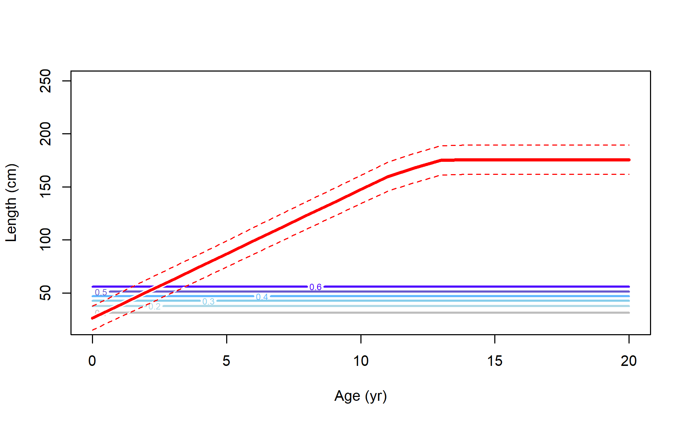

{kind=link}
{kind=link}
{kind=link}
{kind=link}
{kind=link}

Surface plot of Male time-varying retention for Fishery_current
file: sel05_timevary_ret_surf_flt1sex2.png
Selectivity at length for multiple fleets.
file: sel01_multiple_fleets_length1.png
Selectivity at age derived from selectivity at length for multiple fleets.
file: sel02_multiple_fleets_age1.png
Surface plot of Female time-varying retention for Fishery_current
file: sel05_timevary_ret_surf_flt1sex1.png
Countour plot of Female time-varying retention for Fishery_current
file: sel06_timevary_ret_contour_flt1sex1.png
Female ending year selectivity for Fishery_current
file: sel09_len_flt1sex1.png
Surface plot of Male time-varying retention for Fishery_current
file: sel05_timevary_ret_surf_flt1sex2.png

Countour plot of Male time-varying retention for Fishery_current
file: sel06_timevary_ret_contour_flt1sex2.png
Male ending year selectivity for Fishery_current
file: sel09_len_flt1sex2.png
Female ending year selectivity for Discard_historical
file: sel09_len_flt2sex1.png

Male ending year selectivity for Discard_historical
file: sel09_len_flt2sex2.png

Female ending year selectivity for Fishery_historical
file: sel09_len_flt3sex1.png
Male ending year selectivity for Fishery_historical
file: sel09_len_flt3sex2.png

Female ending year selectivity for Fishery_tribal
file: sel09_len_flt4sex1.png

Male ending year selectivity for Fishery_tribal
file: sel09_len_flt4sex2.png
Female ending year selectivity for WCGBTS
file: sel09_len_flt5sex1.png
Male ending year selectivity for WCGBTS
file: sel09_len_flt5sex2.png
Female ending year selectivity for Triennial
file: sel09_len_flt6sex1.png
Male ending year selectivity for Triennial
file: sel09_len_flt6sex2.png

Female ending year selectivity and growth for Fishery_current
file: sel21_agelen_contour_flt1sex1.png

Male ending year selectivity and growth for Fishery_current
file: sel21_agelen_contour_flt1sex2.png
Female ending year selectivity and growth for Discard_historical
file: sel21_agelen_contour_flt2sex1.png

Male ending year selectivity and growth for Discard_historical
file: sel21_agelen_contour_flt2sex2.png

Female ending year selectivity and growth for Fishery_historical
file: sel21_agelen_contour_flt3sex1.png
Male ending year selectivity and growth for Fishery_historical
file: sel21_agelen_contour_flt3sex2.png

Female ending year selectivity and growth for Fishery_tribal
file: sel21_agelen_contour_flt4sex1.png

Male ending year selectivity and growth for Fishery_tribal
file: sel21_agelen_contour_flt4sex2.png

Female ending year selectivity and growth for WCGBTS
file: sel21_agelen_contour_flt5sex1.png
Male ending year selectivity and growth for WCGBTS
file: sel21_agelen_contour_flt5sex2.png
Female ending year selectivity and growth for Triennial
file: sel21_agelen_contour_flt6sex1.png
Male ending year selectivity and growth for Triennial
file: sel21_agelen_contour_flt6sex2.png
{kind=link}
{kind=link}
{kind=link}
{kind=link}
{kind=link}
{kind=link}
{kind=link}
{kind=link}
{kind=link}
{kind=link}
{kind=link}
{kind=link}
{kind=link}